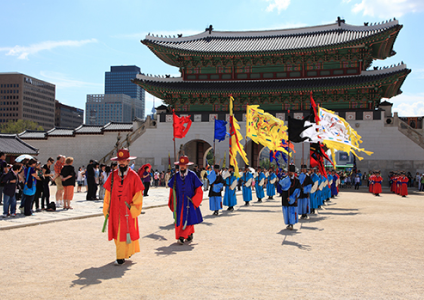
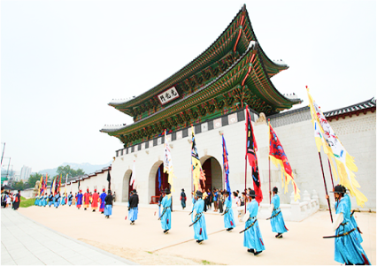
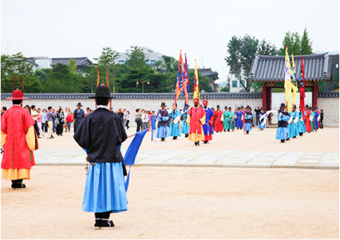

2002년부터 이어져오고 있는 경복궁 수문장 교대의식은 조신시대 왕실 호위문화를
상징하는 대표적인 전통문화행사입니다.
오늘날의 수문장을 만나다
2002년부터 이어져오고 있는 경복궁 수문장 교대의식은 조선시대 왕실 호위문화를
상징하는 대표적인 전통문화행사입니다.생생하게 눈앞에서 펼쳐지는 조선의 수문장
교대의식을 지금 경복궁에서 만나보세요

수문장 교대의식
1일 2회 소요시간 20분

광화문 파수의식
1일 2회 소요시간 10분

수문군 공개 훈련
1일 2회 소요시간 약 15분간
수문장 교대의식은 당시의 복식 및 무기 등을 복원하여 조선 전기 군인들의 모습을
생생하게 재현하는 것에 초점을 맞추고 있습니다.
조선시대 수문장은 도성 및 궁궐의 각 문을 지키던 관직으로, 당초 수문장은 20인에 불과하였지만 임진왜란 당시에는 430에 이르렀적도 있었습니다.
정통있는 수위방식인 수문장 교대의식 경복궁에서 만나보세요!